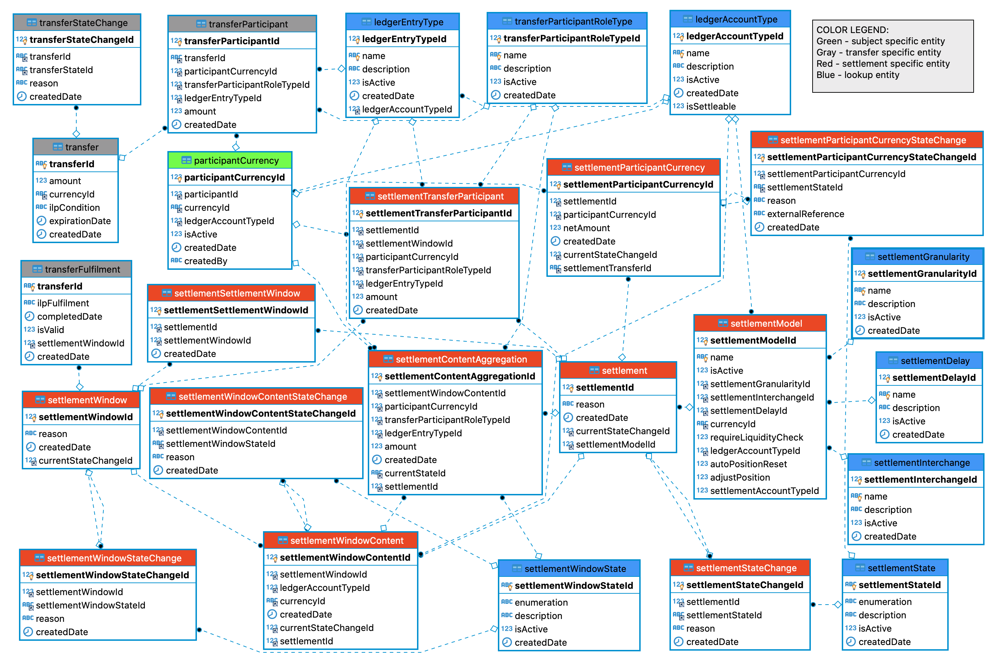

Settlement Process
1. Database Design
Notes:
settlementWindow- a table where all settlement windows are stored;settlementWindowStateChange- stores information regarding settlement windows state;settlement- keeps data regarding all settlements;settlementSettlementWindow- association table for settlements and settlement windows, providing connection many-to-many;settlementStateChange- tracks the settlement state change;settlementTransferParticipant- this table is used for staging data for all transfers which are to be included in a settlement;settlementParticipantCurrency- stores grouped information by participant and currency. For calculation of netAmount, the summarized data fromsettlementTransferParticipantis used;settlementParticipantCurrencyStateChange- used to track the state change of each individual settlement participant account.
The remaining tables in the below ERD are either transfer-specific (gray) or lookup (blue) and are included as direct dependencies to depict the relation between the settlement tables and transfer specific entities.

2. Sequence diagrams
2.1. Settlement Windows By Params
Used for acquiring information regarding Settlement Windows. E.g.:
- Find the ID of the current OPEN window by querying by state and later use the information for closing that window;
- Find all CLOSED and/or ABORTED windows to be used for creating a settlement;
- Other reporting needs.
- Sequence Diagram for Get Settlement Windows by Parameters
2.2. Settlement Windows By Params
Used for acquiring settlement window information when ID is present.
2.3. Close Settlement Window
There is always one open settlement window which groups all ongoing transfers. This functionality is used to close the currently opened window and create the next one.
2.4. Create Settlement
The creation of settlement is possible when at least one OPEN or ABORTED window is provided. The data from all transfers in all provided windows is summarized and as a result the settlement amount is calculated per participant and currency. Depending on its sign we distinct 3 types of participants in regards to the newly created settlement: SETTLEMENT_NET_RECIPIENT, SETTLEMENT_NET_SENDER and SETTLEMENT_NET_ZERO. Newly generated id of type bigint is returned as a response together it all other information.
2.5. Request Settlement
This endpoint is used for acquiring information regarding a settlement and all included windows and accounts/positions. The ID from the previous request is being utilized for that purpose.
2.6. Settlement Transfer Acknowledgment
It is used to advance the settlement through all the states initiated with the creation and finilized by settle or abort. The actual state flow is:
- PENDING_SETTLEMENT: The net settlement report for this window has been taken, with the parameter set to indicate that settlement is to be processed;
- PS_TRANSFERS_RECORDED: Record transfer entries against the Position Account and the Multi-lateral Net Settlement Account, these are the "multi-lateral net settlement transfers" (MLNS transfers). An identifier might be provided to be past to the reference bank;
- PS_TRANSFERS_RESERVED: All the debit entries for the MLNS transfers are reserved;
- PS_TRANSFERS_COMMITTED: All the credit entries for the MLNS transfers are committed. An identifier might be received and recorded from the Settlement bank to allow reconciliation;
- SETTLING: If all accounts are not yet SETTLED, the Status of the settlement is moved to SETTLING. Note: applies only on settlement level;
- SETTLED: Final state when all outstanding accounts are SETTLED, the entire Settlement is moved to SETTLED.
Sequence Diagram for Acknowledgement of Settlement Transfer
2.7. Settlement Abort
- ABORTED: Final state when the settlement is not possible. Please, note the settlement might be aborted up to when no account/position has been marked as PS_TRANSFERS_COMMITTED. Also there is no possibility to mark an individual account as ABORTED, but rahter the entire settlement is ABORTED. After performing such operation there is possibility to create a new settlement by including only non-problematic ABORTED accounts
Sequence Diagram for Settlement Abort
2.8. Request Settlement By SPA
Used to request drill-down information regarding a settlement, participant and account. Even though participant and account are optional, the order settlement/{id}/participant/{id}/account/{id} is mandatory.
2.9. Request Settlements By Params
This endpoint enables advanced reporting capabilities.